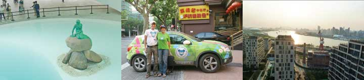
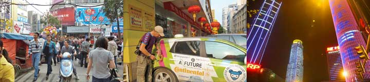
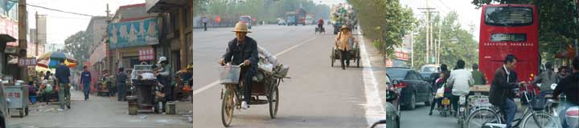
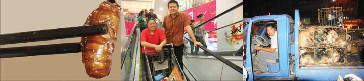
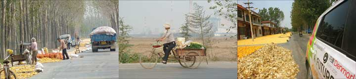
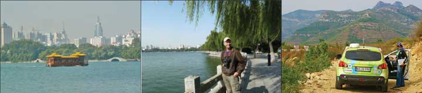
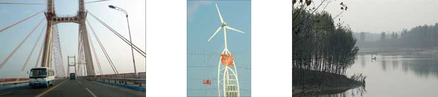

Lene fra Den danske Pavillion tog godt imod os, og vi fik en ordentlig kop kaffe. Den lille Havfrue gør sig virkelig, og bycyklerne rammer fint EXPOs tema Better city, better life. Fotokollagerne på væggene giver også et godt indtryk af livet i Danmark. Nu ser vi frem til at Grønne skal optræde i pavillionen d. 15. Den er ved at få det supereksklusive adgangstegn for biler til EXPO.
Udsigten fra vores 17. sal er fantastisk. Kulprammene sejler op ad floden og elektriciteten får millionbyen til at stråle.
 Vi er ankommet til Shanghai efter at have fuldført den første og længste etape på jordomrejsen. Fra 17. etage hvor vi bor har vi en storslået udsigt over Shanghai og EXPO´s pulserende lyshav. Alt er større og flottere end vi havde turdet forestillet os. Ved et tilfælde ankom vi til Shanghai samtidig med Zero Race, to motorcykler fra Svejts og Tyskland og en eksperimental bil fra Australien, som vil køre jorden rundt på el på 80 dage. Vi spiste en kinesisk middag med de udmattede deltagere, og udvekslede erfaringer. Vores mål er det samme - at vise at elektriske køretøjer duer. Vi sender hermed et stort hurra til Søren Ekelund. A Future's danske elbil som har bragt os hertil, er helt på forkant af udviklingen. Fremtidens biler bliver elektriske. Vi skal naturligvis også hilse fra Grønne, der står og smiler nede på parkeringspladsen.
Vi er ankommet til Shanghai efter at have fuldført den første og længste etape på jordomrejsen. Fra 17. etage hvor vi bor har vi en storslået udsigt over Shanghai og EXPO´s pulserende lyshav. Alt er større og flottere end vi havde turdet forestillet os. Ved et tilfælde ankom vi til Shanghai samtidig med Zero Race, to motorcykler fra Svejts og Tyskland og en eksperimental bil fra Australien, som vil køre jorden rundt på el på 80 dage. Vi spiste en kinesisk middag med de udmattede deltagere, og udvekslede erfaringer. Vores mål er det samme - at vise at elektriske køretøjer duer. Vi sender hermed et stort hurra til Søren Ekelund. A Future's danske elbil som har bragt os hertil, er helt på forkant af udviklingen. Fremtidens biler bliver elektriske. Vi skal naturligvis også hilse fra Grønne, der står og smiler nede på parkeringspladsen.
 Det tog to timer og 50 kilometers kørsel at finde den rigtige vej ud af Nanjing. Flere udkørsler til National road, den almindelige landevej var blokerede af vejarbejde. Vi kørte og kørte og mistede 25 % af vores strøm inden vi omsider fandt ud af byen. Ved frokosttid holdt vi derfor to timers ladepause hvor vi fik set en park med helt nye templer for kinesiske guder, og en buddistisk pagode udformet som et tårn. Mørket faldt på og vi havde igen problemet med at finde frem. Vejene var helt nye, nogle endnu lukkede og GPS'en kunne ikke finde hotellet i Wu Xi. Vores kinesiske guide Serena var næsten slidt op inden vi nåede frem på de sidste 3% strøm.
Det tog to timer og 50 kilometers kørsel at finde den rigtige vej ud af Nanjing. Flere udkørsler til National road, den almindelige landevej var blokerede af vejarbejde. Vi kørte og kørte og mistede 25 % af vores strøm inden vi omsider fandt ud af byen. Ved frokosttid holdt vi derfor to timers ladepause hvor vi fik set en park med helt nye templer for kinesiske guder, og en buddistisk pagode udformet som et tårn. Mørket faldt på og vi havde igen problemet med at finde frem. Vejene var helt nye, nogle endnu lukkede og GPS'en kunne ikke finde hotellet i Wu Xi. Vores kinesiske guide Serena var næsten slidt op inden vi nåede frem på de sidste 3% strøm.
Klokken ni var vi klar til afrejse fra Bang Bu med Grønne ladet op til 93%. Jeg var søvnig, så Hjalte kørte bilen. Serena sad på bagsædet med sin kinesiske GPS, der høfligt starter med at ni hao, hver eneste gang den åbner munden. Trafikken blev mindre kaotisk da vi nærmede os Nanjing. Inde i byen var den tæt, men velordnet. Vi følte os godt tilpas ved at gå aftentur i den store by hvor alle huse er nye. Mellem de exclusive butikker og illuminerede skyskrabere var vi ved at fare vild. Til sidst fandt vi en italiensk restaurant, hvor vi spiste rejsens første pizza. Grønne var sat til opladning nede i hotellets gård, vi vinkede godnat til den fra vores værelse på 8. sal.
Med batteriet opladet til 93% kører Grønne omkring 200 km, så vi behøvede ikke at holde ladepause i dag. Landevejen løb mellem en jernbane og en sø eller kanal - eller også var der vejarbejde og omkørsel ad små mudrede veje. Når trafikken er tæt møder vi medkørende og modkørende biler, busser, lastvogne, motorcykler, elcykler, fodgængere, ladcykler og hølæs i begge sider af vejen. Og så er der alle de køretøjer som maser sig ind fra siderne med overforbrug af hornene, og dem der kører over for rødt eller den forkerte vej rundt i rundkørselerne. Gennem hektisk hellidagstrafik nåede vi til den store by Bong Bu i Anhui provinsen. Vi bliver overhalet, underhalet og inderhalet. Men Grønne har endnu ikke fået en skramme!
Nina
Grønne lader hver nat og kører hver dag så det er en lyst. Vi ankom tidligt til Shishan og spiste en skålfuld ristede cikader på en restaurant. De smagte udmærket! I retning af rejer men rundere i smagen. Eftermiddagen tilbragte vi i sengen foran fjernsynet. Derfra nød vi en gigantisk parade på Den Himmelske Freds Plads og afskydning af en kinesisk måneraket. Mange kinesere brugte festdagen til at shoppe. Om aftenen spiste vi fyldte lotusblomster. Vi vil helst glemme at vi også så og hørte en bil med hundehvalpe som skulle spises.
Nina
Jorden er frugtbar og klimaet mildt. Her høstes 2 eller tre gange om året. Majshøsten er netop afsluttet, og bønderne forbereder markerne til nye afgrøder. Arbejdet udføres omhyggeligt og ordentligt, det meste uden maskiner. Majsen ligger til tørre på vejene, hvor den passes og plejes. Kilometer efter kilometer er vejene gule af majs. Stilkene samles til foder og brændsel, intet går til spilde. Grøntsager dyrkes i meget velpassede haver. Mellem markerne skyder store fabrikker og huse op. Der bygges overalt. By og land vokser sammen. Himlen er grå og diset.
Nina


 Den berømte filosof boede her for 2500 år siden. Folk kom langvejs fra for at høre hans ord og gennem tiden er der blevet bygget en hel lille by af templer til hans ære. Stedet har en behagelig rolig atmosfære. Mellem tusindårige cedertræer bærer kæmpeskildpadder hans visdomsord på ryggen. Foran den største bygning bliver der brændt røgelse af og mange lægger sig på knæ for at bede Confucius om at opfylde et ønske. Jeg købte en lille rød træplade og Serena skrev mit ønske på kinesisk.
Den berømte filosof boede her for 2500 år siden. Folk kom langvejs fra for at høre hans ord og gennem tiden er der blevet bygget en hel lille by af templer til hans ære. Stedet har en behagelig rolig atmosfære. Mellem tusindårige cedertræer bærer kæmpeskildpadder hans visdomsord på ryggen. Foran den største bygning bliver der brændt røgelse af og mange lægger sig på knæ for at bede Confucius om at opfylde et ønske. Jeg købte en lille rød træplade og Serena skrev mit ønske på kinesisk.

Søen midt i byen er Jinans største seværdighed, og bredderne er indrettet som rekreativt område. Nogle pensionister spillede musik og sang, andre lavede tai chi. En hurtiggående båd, bygget som et tehus sejlede os ud til en lille ø med et tempel og en pavillion hvor digtere i sin tid samledes og skrev digte.
Grønne havde ladet op til 92 % og var parat til at køre til til et berømt bjerg. Vi valgte de mindste og mest stejle og snoede veje. Kom gennem smukke landskaber og små landsbyer hvor rige kinesere var ved at bygge store feriehuse.
Nina
Om aftenen havde vi opfundet en snor til at styre strømkablet fra hotelværelset ned til Grønne der stod parkeret bag hotellet i Baizhou. Da vi forlod byen løb vejen i lang tid langs en kanal. Vi kom over en flod, og igennem “Solar Valley,” hvor der var vindmøller og solceller på alle gadelamperne, muligvis også på vindmøllerne. Senere kom vi over Den Gule Flod og ind i Jinan, provinsens Shandongs hovedstad - en by som vi aldrig havde hørt om, en lille by med kun seks millioner indbyggere!
Nina.